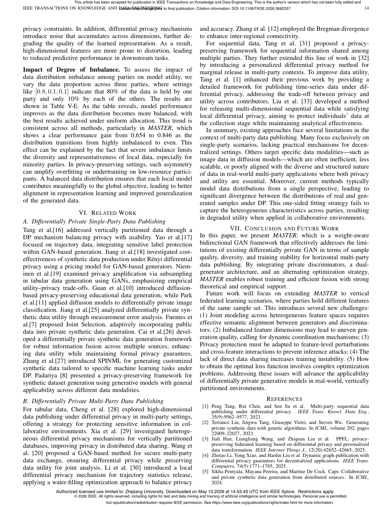

Horizontal Multi-Party Data Publishing Under Differential Privacy Via Weight-Aware Bidirectional Generative Adversarial Networks
IEEE Transactions on Knowledge and Data Engineering (TKDE) 2026

Abstract
—Horizontal multi-party data publishing enables parties with the same attributes but different records to collaboratively share synthetic data. Generative adversarial networks (GAN) excel at cap- turing complex distributions and generating statistically consistent samples. However, existing studies treat all parties’ data equally without considering heterogeneity, approximate data distributions largely from only a single direction, and suffer from training insta- bility under limited privacy budgets. To address these limitations, we proposeMASTER, a weight-aware bidirectional GAN approach. In MASTER, each party maintains a sanitized discriminator to protect local data, while a central server coordinates two complementary generators that learn the underlying data distribution from different perspectives. Specifically, we introduce a dual-generator GAN struc- ture, where training is enhanced by simultaneously increasing the distance between the distributions of generated samples to improve diversity and reducing the discriminators’ ability to distinguish them to stabilize training and enhance sample quality. Moreover, a weight-aware fusion mechanism is designed to dynamically balance contributions from different parties and generators based on data quality, enhancing inter-party connections, generation diversity, and training stability. To compute the weights, we formulate an unsu- pervised integer programming problem and design an alternating optimization scheme. Our theoretical analysis demonstrates that MASTERmaintains comparable computational complexity to non- private settings while providing strong differential privacy and utility guarantees. Extensive experiments on four real-world datasets and one synthetic dataset showMASTER’s effectiveness.
Resources
Citation
@inproceedings{ZZCC26,
author = {Pengfei Zhang and Zhikun Zhang and Yang Cao and Xiang Cheng and Lihua Yin and Puning Zhao and Zhiquan Liu and Li Sun and Lei Shi and Ji Zhang},
title = {{Horizontal Multi-Party Data Publishing Under Differential Privacy Via Weight-Aware Bidirectional Generative Adversarial Networks}},
booktitle = {{Transactions on Knowledge and Data Engineering}},
publisher = {IEEE},
year = {2026},
}